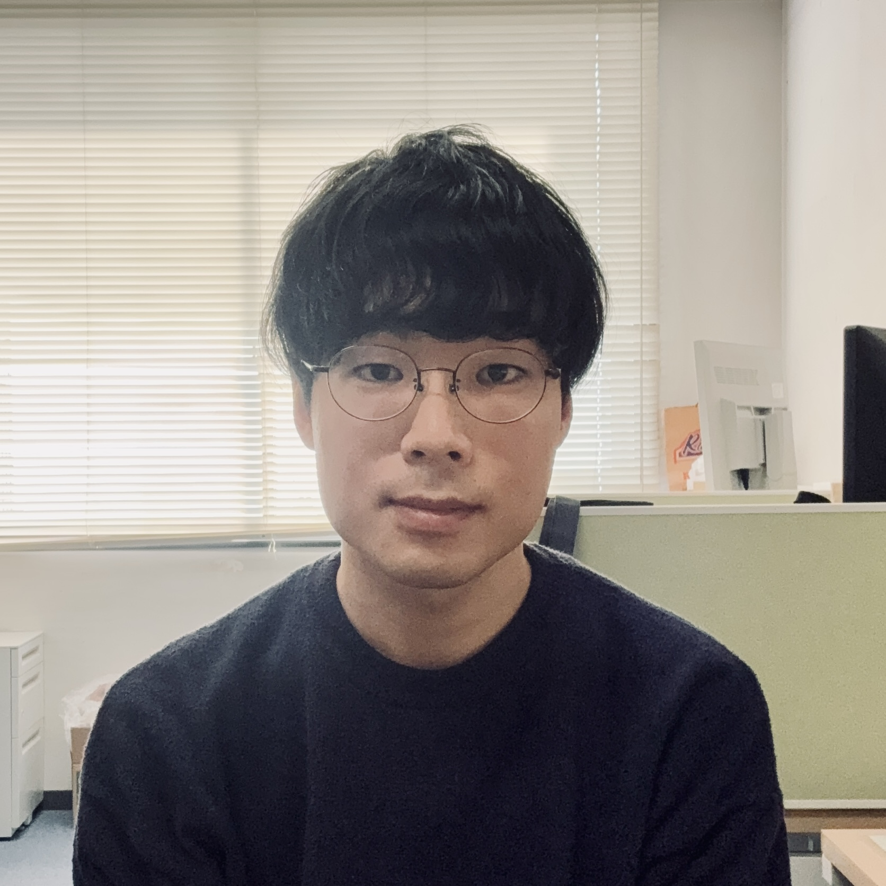

Kazuki Tomaru
Email: tomaru [at] astro-osaka.jp

Research interests: galaxy formation and evolution, cosmological hydrodynamic simulations, dwarf galaxies, internal dynamics and kinematics of galaxies, baryon cycle
Hi! I'm Kazuki Tomaru (Japanese: 戸丸 一樹), a Ph.D. student in the Theoretical Astrophysics (OUTAP) Group, Department of Earth and Space Science, Graduate School of Science, The University of Osaka, Japan, where I work under the supervision of Prof. Kentaro Nagamine.
My research focuses on galaxy formation and evolution in a cosmological context. I aim to understand the diverse forms and properties we observe in galaxies and uncover the fundamental physical processes that shape them. I design, run, and analyze cosmological zoom-in hydrodynamic simulations to investigate the complex interplay of phenomena across multiple scales, from large-scale structure formation to star formation within individual galaxies. I'm fascinated by the rich complexity of baryonic physics in structure formation, which is key to understanding some of the universe's greatest mysteries.
Currently, I'm running simulations of dwarf galaxies with a particular interest in how their shapes evolve over time.
Education
2023– Ph.D. Student, Dept. of Earth and Space Science, Grad. School of Science, The University of Osaka*
2023 M.S., Dept. of Earth and Space Science, Grad. School of Science, Osaka University
2021 B.S., Dept. of Physics, School of Science, Osaka University
*Renamed from Osaka University in April 2025
Research Activities
CROCODILE-DWARF: Cosmological Zoom-in Hydrodynamic Simulations of Dwarf Galaxies
I perform and analyze cosmological zoom-in hydrodynamic simulations of dwarf galaxies using the GADGET4-OSAKA code. We study the morphological and kinematic diversity of gas and stars in these systems, which provides crucial insights into the galaxy–halo connection at the low-mass end of galaxy formation.
Publications
Lead Author Publications
- Tomaru, K., et al. 2025, CROCODILE-DWARF: Assembly and Kinematics of Field Dwarf Galaxies with GADGET4-OSAKA, ApJ, submitted, arXiv:2510.26513 [SciX, ADS]
Contributing Author Publications
- Zhang, Z. J., et al. (Tomaru, K. as 6th author) 2025, Probing the Cosmic Baryon Distribution and the Impact of Active Galactic Nuclei Feedback with Fast Radio Bursts in CROCODILE Simulation, ApJ, 993, 162 [SciX, ADS, arXiv]
Contact
If you'd like to get in touch, please do! Please send me an email at tomaru [at] astro-osaka.jp.
Thank you for visiting my website!
Pronouns: he/him
Languages: Japanese (native), English